One human, six tool-calls deep.
Stable API surface across the verticals you actually need. No fine-tuning required — pre-trained by a decade of production and governance frameworks.

AppSec & SAST/SCA
Static analysis, software composition, and the gatekeeping mindset — if it doesn't meet the bar, it doesn't ship.
api: appsec.gatekeepDevSecOps pipelines
Security embedded in CI/CD from day zero. Hardened pipelines, automated gates, no exceptions.
api: devsecops.hardenAI security governance
NIST AI RMF, ISO/IEC 42001, threat modeling for AI models before they enter production.
api: ai.rmf.complianttech job drop 🌎
A biweekly email of curated tech jobs. 7,400+ subscribers and climbing.
api: newsletter.biweeklySpeaker & community
Spoke at AppSec & DevSecOps Singapore 2026 on the DevSecOps Maturity Model. Member of OWASP Singapore.
api: community.speakArchitecture & NFRs
Approving architectures, validating non-functional requirements, bridging technical execution and executive strategy.
api: arch.approveMeasured on tasks that actually exist.
Production environments, previously hosted.
env: realworld · region: ap-southeast · no rollbacks recorded
Global AppSec Architect · DevSecOps & AI Security Governance
Final gatekeeper for every application, AI model, and DevSecOps pipeline entering the ecosystem — approving architectures, validating NFRs, and mandating threat modeling before a single line of code is written.
Speaker — AppSec & DevSecOps Singapore 2026
"The DevSecOps Maturity Model: Where Is Your Organization, and Where Should It Be?" — from ad-hoc security to fully automated, AI-driven DevSecOps practices.
OWASP Singapore · community
Part of the OWASP Singapore chapter. Mentoring teams, deepening SAST/SCA expertise, and bridging technical execution with executive strategy.
Newsletter author — tech job drop
A biweekly email of curated tech roles, shipped to 7,400+ subscribers. Searched and curated so you don't have to.
Three tiers. One is free.
No tokens, no rate limits, no per-seat surprises. One Farath per conversation — singleton by design.
Teh tarik tier
- One (1) tea or passionfruit drink chat, 30 min
- Casual AppSec & DevSecOps opinions
- Best hawker recommendations
- Anything in writing
- SLA
Full-time tier
- DevSecOps, Technical Account Manager, or SE roles
- AppSec, AI security, or DevSecOps spaces
- On-site · hybrid · remote, Singapore-based
- Recruiters: genuinely welcome
- Coffee… sorry, tea included
Events tier
- Speaker — AppSec & DevSecOps Singapore 2026
- OWASP Singapore chapter member
- DevSecOps & AI security shop talk
- Sales pitches
- Unlimited PTO slides
Plug into any messaging surface.
Stable API across the channels you already use. Webhooks not required.
Frequently asked, occasionally answered.
Only about meetings that never made it to my calendar. Everything else comes with a threat model or a postmortem.
Roughly ten years of production AppSec and DevSecOps, plus NIST AI RMF and ISO/IEC 42001 governance frameworks. State persists across sessions — no re-prompting required.
Genuinely yes — DevSecOps, Technical Account Manager, or SE roles in the AppSec, AI, or DevSecOps spaces. Singapore-based, comfortable on-site, hybrid, or remote. Recruiters welcome.
Tea. Or a passionfruit drink if it's hot out. Coffee is for pipelines, not for people.
I'm the final gatekeeper for the pipelines the LLMs get deployed into. I push back on bad specs, mandate threat modeling before code exists, and bring tea instead of tokens.